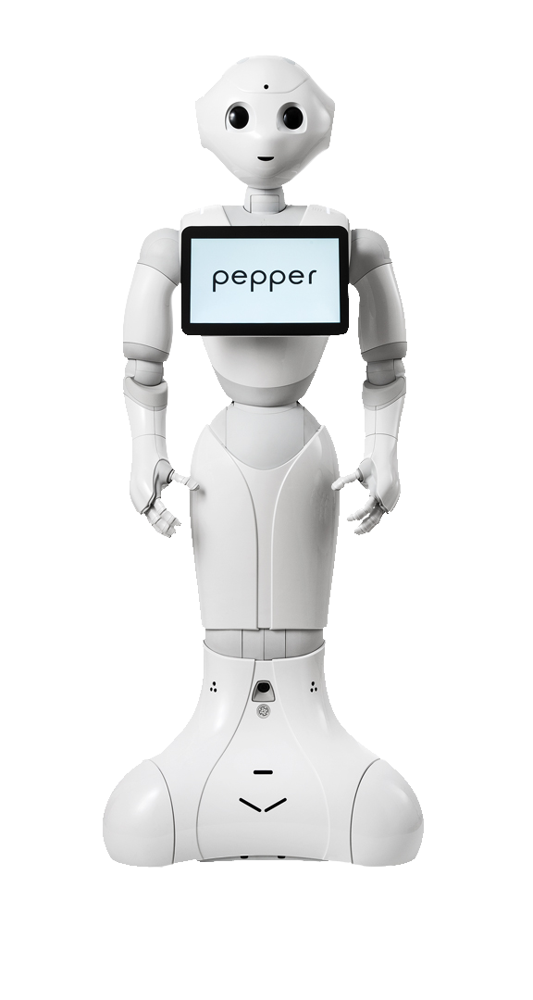
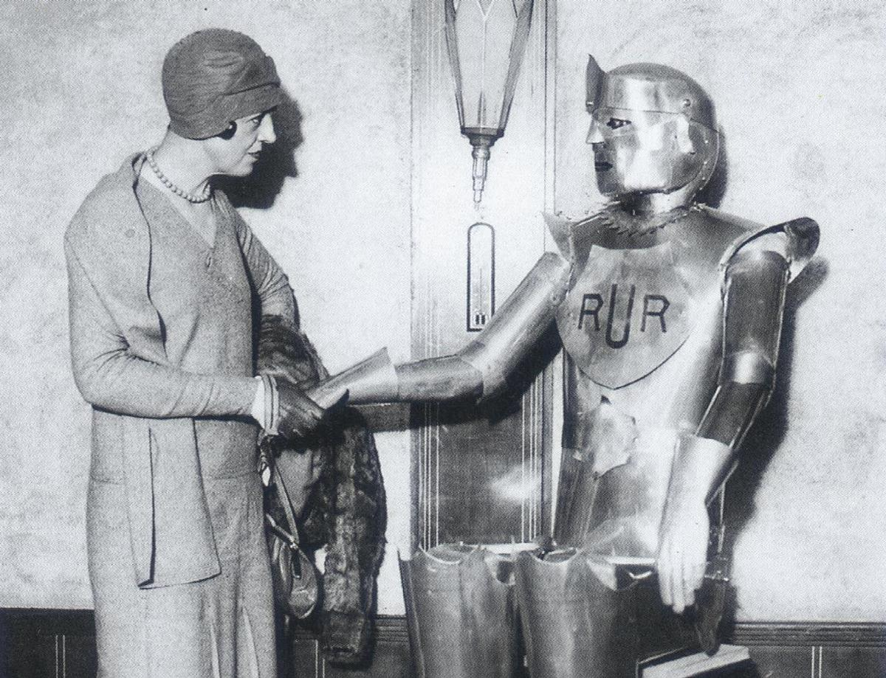

What is robotics?
Robotics is a branch of engineering that involves the conception, design, manufacture and operation of robots. The objective of the robotics field is to create intelligent machines that can assist humans in a variety of ways.

History
The term robotics is an extension of the word robot. One of its first uses came from Czech writer Karel Čapek, who used the word in his play, Rossum's Universal Robots, in 1920. However, it is science fiction author Isaac Asimov who has been given credit for being the first person to use the term in the 1940s by Oxford English Dictionary. In Asimov's story, he suggested three principles to guide the behavior of autonomous robots and smart machines. However, it wasn't until a couple of decades later in 1961 -- based on designs from the '50s -- that the first programmable robot, Unimate, was created to move scalding metal pieces from a die-cast machine. Asimov's Three Laws of Robotics have survived to the present:
- Robots must never harm human beings.
- Robots must follow instructions from humans without violating rule 1.
- Robots must protect themselves without violating the other rules.

Robotics applications
Today, industrial robots, as well as many other types of robots, are used to perform repetitive tasks. They may take the form of a robotic arm, robotic exoskeleton or traditional humanoid robots. Industrial robots and robot arms are used by manufacturers and warehouses, such as those owned by Amazon, Devol, Best Buy and more. To function, a combination of computer programming and algorithms, a remotely controlled manipulator, actuators, control systems -- action, processing and perception -- real-time sensors and an element of automation helps to inform what a robot or robotic system does. Some additional applications for robotics are the following:
- home electronics
- computer science/computer programming
- artificial intelligence
- data science
- law enforcement/military
- mechanical engineering
- mechatronics
- bioengineering/healthcare
- aerospace
The pros and cons of robotics
Robotic systems are coveted in many industries because they can increase accuracy, reduce cost and increase safety for human beings. In fact, safety is arguably one of robotics' greatest benefits, as many dangerous or unhealthy environments no longer require the human element. Examples include the nuclear industry, space, defense, maintenance and more.